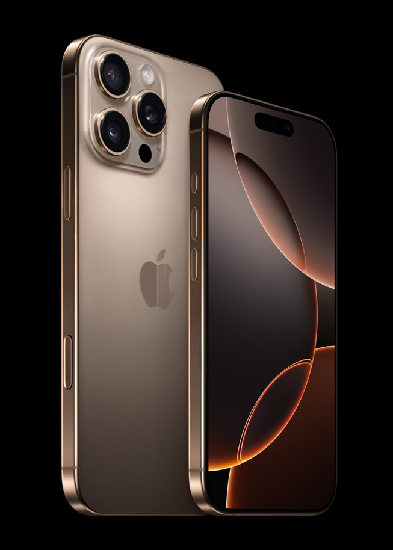
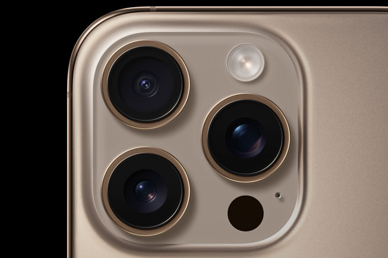
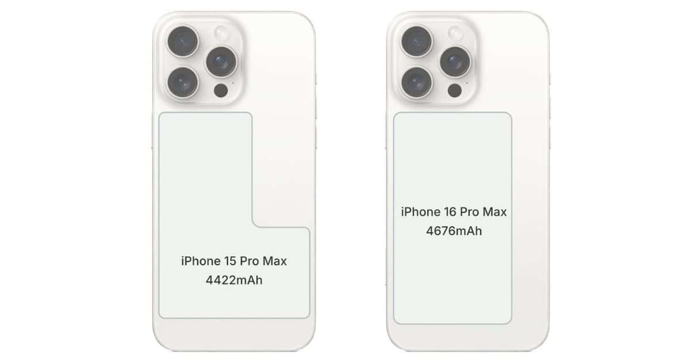

Is the phone a good fit for you?
The iPhone 16 Pro Max is the latest flagship phone from Apple, featuring the brand-new iOS 18, which introduces significant improvements to long-neglected features. The phone boasts a stunning 120 Hz 6.9-inch display. Underneath, it’s powered by the impressive Apple A18 Pro chipset with a 6-core CPU, ensuring excellent performance for any task.
Storage
- A 6-core CPU with four high-performance cores and two efficiency cores.
- An upgraded 16-core neural engine optimized for running large generative models.
- An improved memory subsystem offering 17% more memory bandwidth.
Camera
The iPhone 16 Pro Max excels in camera performance with:
- A 48 MP rear sensor with an f-stop of 2.8 and a 120 mm focal length, rivaling modern DSLR cameras.
- The ability to record at 4K quality at 120 fps or 1080p at 240 fps.
Screen Size
- 6.42 x 3.06 x 0.32 inches, compared to the previous 5.89 x 2.81 x 0.32 inches.
- Slightly heavier, weighing 0.96 ounces more than the iPhone 16.
Picture Button
The new picture button, a capacitive sensor located on the side of the phone, allows users to:
- Launch the camera with a single press.
- Take photos with a quick press.
- Record videos by long-pressing the button.
Battery Life
- iPhone 16 Pro Max: 18 hours and 6 minutes.
- iPhone 16 Plus: 16 hours and 29 minutes.
- iPhone 16 Pro: 14 hours and 7 minutes.
- iPhone 16: 12 hours and 43 minutes.
Pricing
- 16 Pro:
- $1,449 for 128 GB.
- $1,599 for 256 GB.
- $1,899 for 512 GB.
- $2,199 for 1 TB.
- 16 Pro Max:
- $1,749 for 256 GB.
- $2,049 for 512 GB.
- $2,349 for 1 TB.
Colors

- Black Titanium
- White Titanium
- Natural Titanium
- Desert Titanium
Final Thoughts
The iPhone 16 Pro Max offers incredible value with its enhanced features, superior camera quality, larger screen, and longer battery life. While it’s more expensive, the extra investment is well worth it for the additional benefits it delivers.